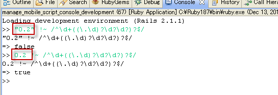

什么是正则表达式？
正则表达式（regular expression）就是用一个“字符串”来描述一个特征，然后去验证另一个“字符串”是否符合这个特征。
例如：表达式“ab+” 描述的特征是“一个 'a' 和 任意个 'b' ”，那么 'ab', 'abb', 'abbbbbbbbbb' 都符合这个特征。
注意点：正则表达式校验的对象是否为字符类型。
开发过程中的例子：
Rails中代码：discount_price.to_s !~ /^\d+((\.\d)?\d?\d?)?$/,表达式的含义是较验0.001～1.000的范围
discount_price在DB中的类型是decimal(14.3)
